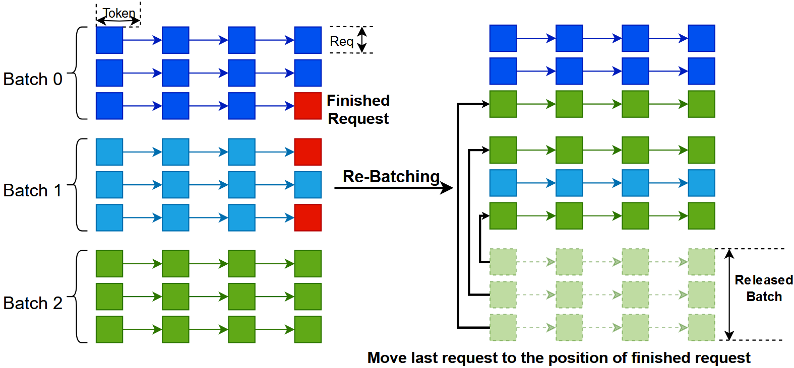
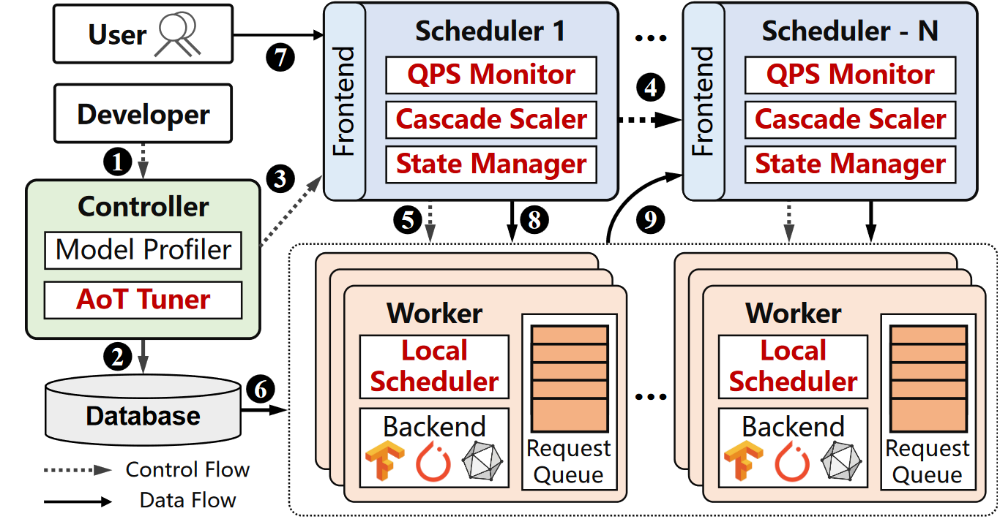

个人简介
胡一涛，天津大学智能与计算学部副研究员，天津市TANKLAB实验室李克秋教授团队成员。博士毕业于美国南加州大学，导师为Ramesh Govindan教授。本科毕业于上海交通大学，导师为王新兵教授。研究方向包括大语言模型（LLM）系统、深度学习（DNN）系统、分布式计算等方向。近期主要致力于大语言模型在云端 GPU 集群的部署与推理优化，旨在通过计算加速、并行优化和资源编排等技术实现高性能、高效率和高可扩的 LLM 推理系统。通过与 IBM Watson 研究院、三星研究院、微软研究院等研究机构的合作，在 SoCC、Ubicomp、INFOCOM、IWQoS、ASPLOS、SIGCOMM 和 TPDS 等高水平会议/期刊上发表论文十余篇。研究获得NSFC等机构资助，并获得天津大学优秀青年学术人才奖、SoCC'24最佳论文奖等荣誉。
近期，带领团队开发了全国首个高校问答大模型“天问”（Twen.ai）。基于RAG检索增强技术，天问在学习生活、升学就业、科研学术、奖学金申请等方面为天大师生提供咨询服务。天问于24年4月正式发布，每日服务数千咨询问题。
欢迎有自驱力、编程能力强、对大语言模型系统感兴趣的学生与我邮件联系。请邮件附上简历/简介！
研究内容
目前我主要研究大语言模型和深度学习模型在云端 GPU 集群的部署与推理优化，旨在实现高性能、高效率和高可扩的 LLM 推理系统。
-
大语言模型（LLM）系统
- 大模型推理服务：巨大的内存消耗和不可预测的输出长度，为 LLM 应用带来了新的挑战。 我们设计了 LLM 推理系统（qLLM、tgLLM），降低了 LLM 请求的作业完成时间，并提高了模型吞吐量和资源利用率。 我们还构建了多个推理系统（InferRAG、InferMM）来管理 RAG 和多模态等场景下的GPU计算资源。 
-
大模型架构及应用: 近期 LLM 架构的创新也带来了新的挑战。我们设计了推理系统（SpecInfer、ParaMoE）来优化推测解码和混合专家的推理效率。此外，我们还研究了前向解码、LoRA 服务、kv-cache 压缩等优化问题。

-
深度学习（DNN）系统
- 低时延推理服务：为了保证良好的用户体验，基于 DNN 的应用通常有一个时延目标。我们设计了多个 DNN 推理系统（Harpagon、DeepLat、TopInfer），通过动态批处理、请求分派和配置解耦等技术，最大限度地降低了延迟目标下的服务成本。我们还构建了多个弹性扩缩容系统（SLOpt、DeepChain），通过 AoT 编译和模型预热等技术，在突发工作负载下最大化系统吞吐量。 

{kind=link}
代表论文
- [SoCC 24] Pre-Warming is Not Enough: Accelerating Serverless Inference With Opportunistic Pre-Loading (CCF-B, Best Paper Award)
- [SIGCOMM 24] PPT: A Pragmatic Transport for Datacenters (CCF-A)
- [ASPLOS 24] FUYAO: DPU-enabled Direct Data Transfer for Serverless Computing (CCF-A)
- [IWQoS 23] High-throughput Sampling, Communicating and Training for Reinforcement Learning Systems (CCF-B)
- [TPDS 23] Accelerating Data Delivery of Latency-Sensitive Applications in Container Overlay Network (CCF-A)
- [SoCC 21] Scrooge: A Cost-Effective Deep Learning Inference System (CCF-B)
- [Middleware 18] Olympian: Scheduling GPU Usage in a Deep Neural Network Model Serving System (CCF-B)
- [Ubicomp 16] ALPS: Accurate Landmark Positioning at City Scales (CCF-A)
- [INFOCOM 14] Critical Sensing Range for Mobile Heterogeneous Camera Sensor Networks (CCF-A)
荣誉奖励
- 最佳论文奖，SoCC，2024
- 优秀青年学术人才奖，天津大学，2024
- 启明学者，天津大学，2023
- 䇹政学者（交大首位），上海交通大学，2014
- SEIEE毕业生代表，上海交通大学，2014
教学课程
- 计算机系统基础，天津大学，23年春，24年春
- 算法分析与设计，天津大学，23年秋
- Introduction to Internetworking，美国南加州大学，16年春
学生
- 赵志新 (博士生, 2022 - Now)1
- 杨国涛 (博士生, 2023 - Now)1
- 郑梁 (博士生, 2024 - Now)2
- 高家珩 (硕士生, 2022 - Now)
- 李林轩 (硕士生, 2022 - Now)
- 龚子琪 (硕士生, 2023 - Now)
- 申晨 (硕士生, 2023 - Now)
- 肖景元 (硕士生, 2024 - Now)
- 易锦均 (硕士生, 2024 - Now)
- 王正超 (硕士生, 2024 - Now)
- 王涛 (硕士生, 2024 - Now)
- 朱文鑫 (本科生, 2023 - Now)
- 纪明方 (本科生, 2023 - Now)
- 曾凯 (本科生, 2023 - Now)
- 钟震屹 (本科生, 2024 - Now)
- 王科 (本科生, 2024 - Now)
- 李俊豪 (本科生, 2024 - Now)
- 丁昊 (本科生, 2024 - Now)
{kind=link}